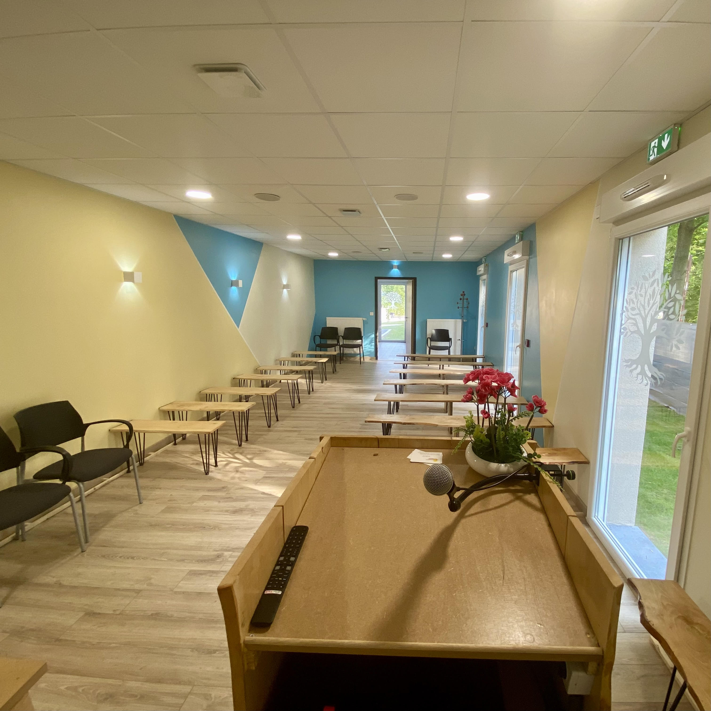

Nos installations sont conçues pour offrir confort et soutien à vous et à vos proches dans ces moments difficiles.
Nous mettons à votre disposition deux salons, le Salon Ivoire et le Salon Azur. Ces espaces sont aménagés pour vous offrir un cadre paisible et respectueux, où vous pourrez vous recueillir en toute intimité.
Notre salle de cérémonie est entièrement équipée pour vos recueillements et peut accueillir jusqu'à environ 50 personnes. Avec une ambiance apaisante et une attention portée aux détails, cet espace est conçu pour honorer la mémoire de vos êtres chers.

Notre hall d'entrée vous accueille dans une atmosphère chaleureuse. C'est un lieu de rencontre où vous pourrez vous retrouver avec vos proches, partager des souvenirs et prendre un moment de réconfort autour d'un café ou d'un chocolat.
Notre parking, avec ses six places dont une réservée aux personnes à mobilité réduite (PMR), vous offre la tranquillité d'esprit lors de votre visite.